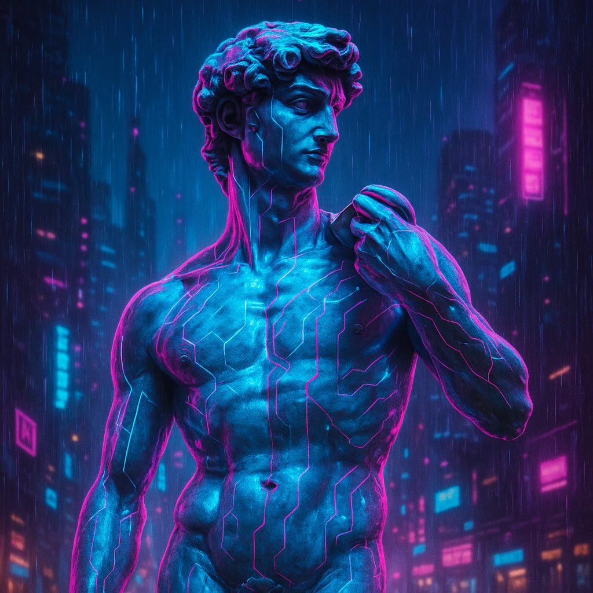
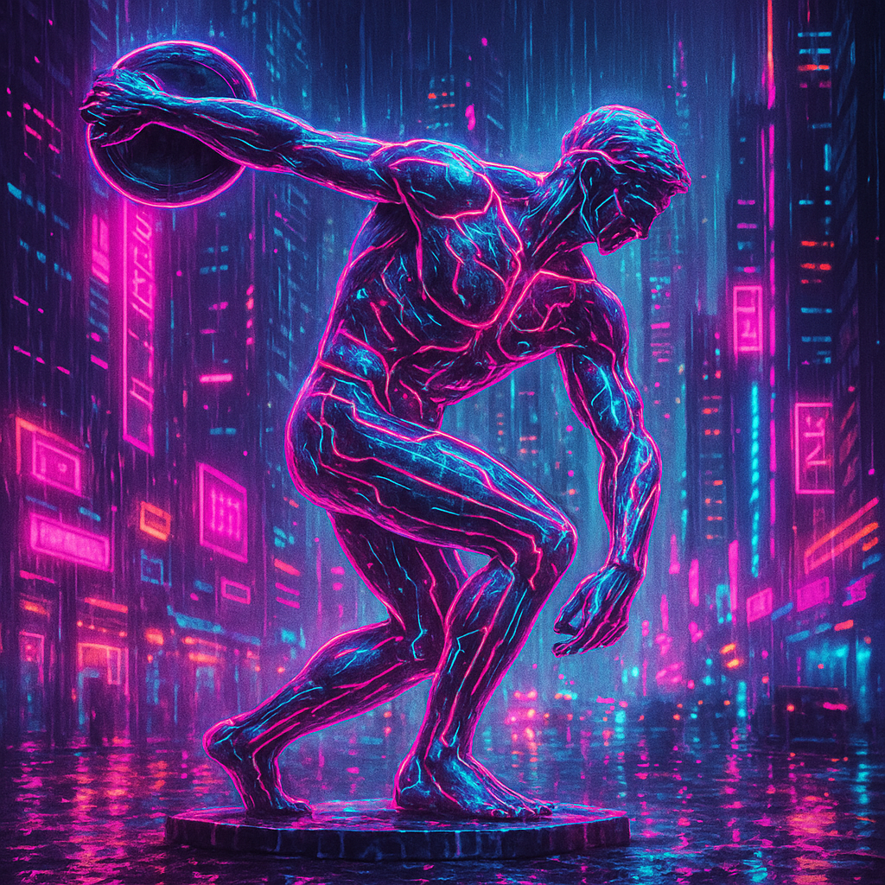
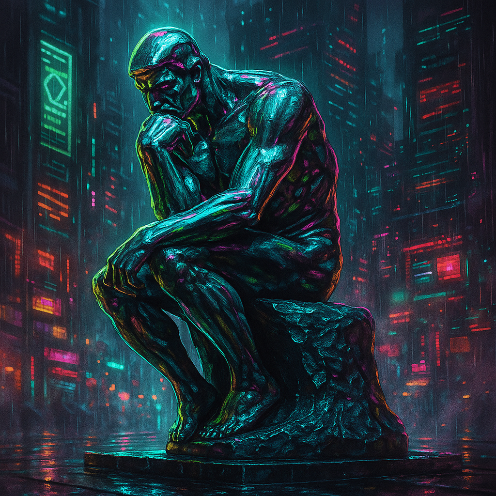

Style Guide
Welcome to the style guide for the Urban Food website created as a concept for the Connected Communities Initiative. In this guide, you'll find the design language and component styles that inform the look and feel of our pages.
Button Styles
Visceral
Designing for first impressions covering information architecture, layout, typography and colour.
Learn More Behavioural
Designing for functionality covering key interactive components including forms with a focus on micro-interactions and feedback.
Learn More Reflective
Designing for meaning and identity covering how users see themselves in the website including ethical considerations.
Learn More 